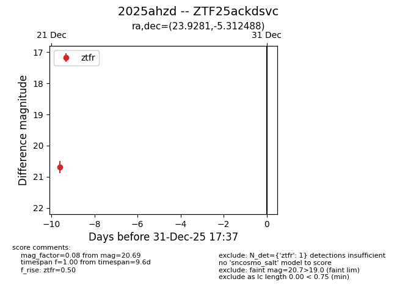
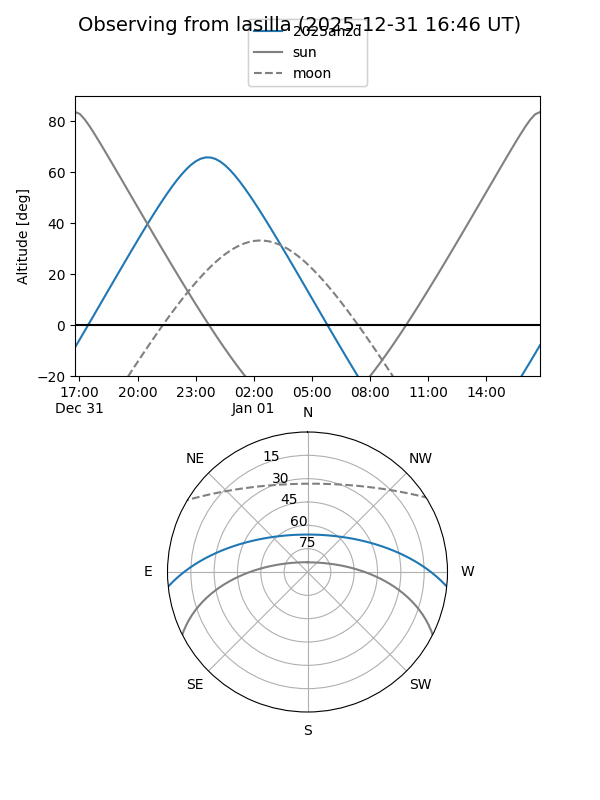
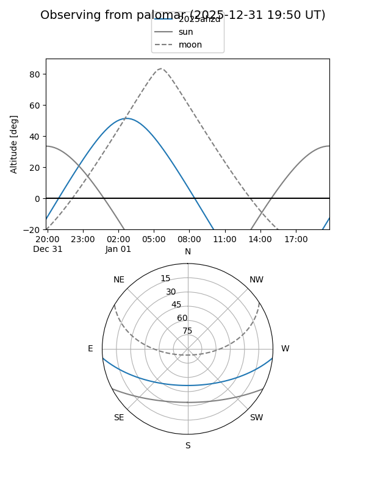

2025ahzd
Target 2025ahzd at 2026-01-09 12:49
Aliases and brokers:
FINK: link
Lasair: link
ALeRCE: link
TNS: link
YSE: link
alt names
ZTF25ackdsvc (ztf,fink_ztf)
2025ahzd (tns,yse)
Coordinates:
equatorial (ra, dec) = 23.9281,-5.31249
equatorial (HMS+DMS) = 01:35:42.74,-05:18:44.96
galactic (l, b) = (150.6922,-65.76913)
Flags:
Photometry:
last ztfr=20.69
1 ztfr detections
Lightcurve

Visibility


Additional plots